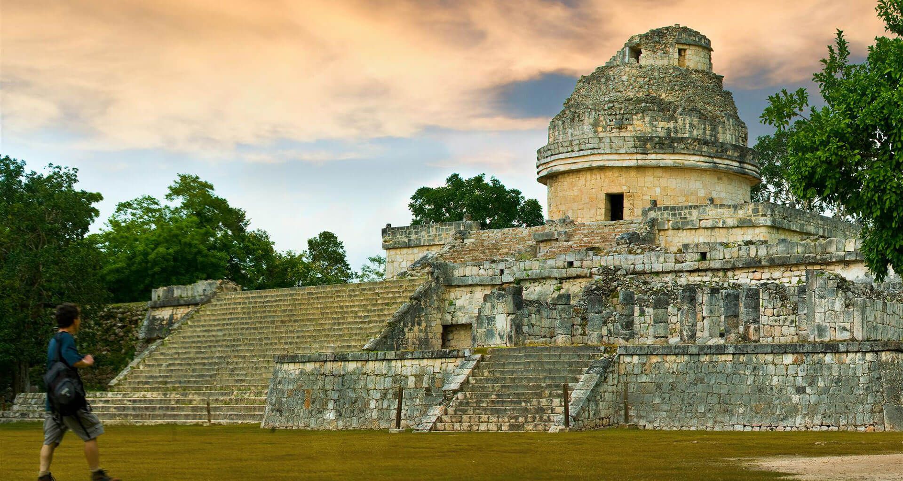

Guatemala
Tikal
Home to a pyramid taller than a 20-story building — you can see it poking out of the jungle trees!
Meet a brilliant people who built giant stone cities in the rainforest, invented their own writing, and studied the stars — over 2,000 years ago.
A clever people who built a great civilization in the rainforest.
The Maya were a people who lived in the thick, green rainforests of Mesoamerica — the land we now call southern Mexico, Guatemala, Belize, and parts of Honduras.
They were not one big country ruled by one king. Instead, the Maya lived in many city-states — a bit like if every big town had its own king or queen, its own army, and its own markets.
They were farmers, builders, artists, and star-watchers. They wrote books, played ball games, made music, and traded pretty things like jade, feathers, and cocoa beans.
And here is something amazing: the Maya are still here today! Over 6 million Maya people live now, and many still speak Mayan languages their great-great-great grandparents spoke.

The word “Maya” means both the people and their family of languages. There are about 30 Mayan languages still spoken today!
Imagine a hot jungle, full of howler monkeys, jaguars, and colourful birds.
The Maya lived in three big kinds of places:
The rainforest was full of jaguars, spider monkeys, toucans, and giant iguanas. It was also full of snakes — so watch your step!
The Maya story is 4,000 years long! Here are the biggest moments.
Small groups of people start farming maize (corn) and living in villages.
Villages grow into towns. People begin building small temples and making pottery.
Huge cities like Tikal and Palenque rise up. Kings and queens rule. Art and writing explode!
Over 40 big cities shine across the rainforest. Maya astronomers map the stars.
Many southern cities are left empty. Nobody knows exactly why — maybe drought, war, or both.
Cities like Chichén Itzá grow powerful in the Yucatán.
Spanish ships reach the land. A hard time begins for the Maya.
More than 6 million Maya people live today, speaking around 30 Mayan languages.
The Maya built over 40 big cities, each with pyramids and temples.
What was it like to wake up as a Maya kid?
Most Maya people were farmers. They grew maize (corn), beans, squash, chilli peppers, tomatoes, and cocoa. Yes — chocolate comes from the Maya! They drank it as a spicy, frothy drink. (Sugar wasn’t added until much later.)
Maya homes were small houses made of wood and mud, with roofs made of palm leaves. The whole family slept in one room on woven mats.
Kids helped their families. Boys learned to farm, hunt, and sometimes to read and write. Girls learned to weave beautiful cloth, cook tortillas, and care for younger brothers and sisters. Some children became scribes or priests!
For fun, the Maya played a ball game with a heavy rubber ball. They could not use their hands — only hips, knees, and elbows. Ouch!
Cocoa beans were so valuable the Maya used them as money. Imagine paying for toys with chocolate!
The Maya were some of the greatest astronomers who ever lived.
Without any telescopes, the Maya watched the sky every single night. They learned exactly how the Sun, Moon, and planets moved.
They were so good at it that they could predict eclipses — when the Moon covers the Sun — many years before they happened.
The Maya had not just one but three different calendars all running at the same time:
Maya priests tracked the planet Venus so carefully that their records are only off by a few minutes over 500 years. That’s almost perfect!

The Maya invented their own writing — and a number that we all use today.
Maya writing used little pictures called glyphs. Some glyphs stood for whole words. Others stood for sounds — a bit like letters. Put them together and you could write anything!
The Maya wrote on stone, on walls, on pottery, and in folded books called codices (say: KOH-dih-seez), made from tree bark.
They were also brilliant at math. Their numbers were simple but clever:
The Maya invented the number zero all by themselves — one of the biggest ideas in all of math.
Try it: three dots on top of one bar = 8. Easy!
The Maya told wonderful stories about how the world was made.
The Maya believed in many gods. Each god looked after a different part of life:
The wise old sky god. He was said to have given the Maya writing and calendars.
The rain god. When thunder cracked, farmers said Chaac was striking his lightning-axe against the clouds.
The moon goddess. She watched over babies, weaving, and medicine.
Two brave brothers named Hunahpú and Xbalanqué. They beat the lords of the underworld at the ball game using their wits!
A famous Maya book called the Popol Vuh (say: POH-pol VOO) tells the story of how the gods made people. Their first try was with mud — it fell apart. Then wood — the wooden people had no feelings. Finally, they made people from corn dough. And those corn people could think, feel, and thank the gods. That is why corn was so sacred to the Maya.
A real-life mystery that scientists are still trying to solve.
Around the year 900 CE, something strange happened. One by one, the big Maya cities in the south stopped growing. Kings left their thrones. Builders stopped building. The jungle slowly covered up the pyramids until they looked like hills.
This is called the Maya Collapse. Nobody knows exactly why it happened. Scientists have found clues that point to many reasons all mixing together:
But here is the important thing: the Maya people did not vanish. They moved. New cities grew up in the north, like Chichén Itzá. Life went on — just in a different way.
Later, in the 1500s, Spanish explorers and soldiers arrived from across the sea. They brought new diseases the Maya had never seen, and they took over Maya lands. Many Maya books were burned. It was a very hard time. But even then — the Maya held on.
Their story is not over. It is still being written.
More than 6 million Maya people live today in Mexico, Guatemala, Belize, Honduras, and El Salvador.
They speak around 30 different Mayan languages — like K’iche’, Yucatec, Tzotzil, and Q’anjob’al.
Many Maya families still grow corn the way their ancestors did. They weave beautiful cloth with patterns that are thousands of years old. They cook tamales. They tell the old stories.
Maya writers, artists, teachers, and scientists are sharing their history with the world — and kids like you are part of keeping it alive, just by learning about it!
Five friendly questions. No rush — take your time.